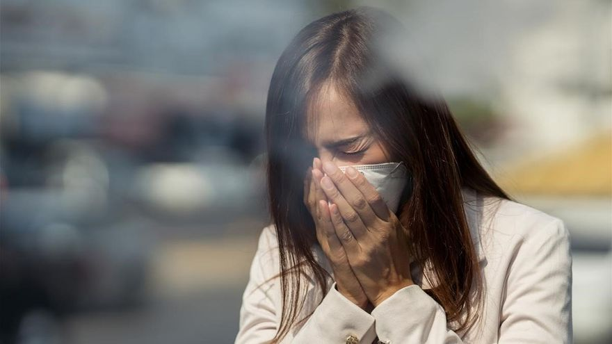
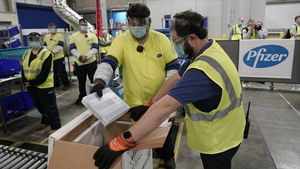

Científicos estadounidenses contradicen a Simón: 'El virus se transmite por aerosoles'

Científicos estadounidenses liderados por Kimberly A. Prather, del Instituto Scripps de Oceanografía (Estados Unidos), han reivindicado que 'existe evidencia abrumadora' de que la inhalación del virus del covid-19 a través de pequeñas gotitas conocidas como aerosoles representan 'una importante vía de transmisión de la enfermedad'.
En una carta publicada en la revista científica 'Science', los investigadores emiten una opinión que contradice al director del Centro de Coordinación de Alertas y Emergencias Sanitarias, Fernando Simón, quien aseguró el pasado jueves que 'no hay evidencia científica sólida' de que el coronavirus se transmite en espacios cerrados normales, más allá de los entornos donde se realizan procedimientos médicos con aerosoles.
'No hay evidencias sólidas de que haya habido transmisión probada por aerosoles en medios sociales normales, si bien hay grupos que están proponiéndolo como un mecanismo de transmisión posible', argumentó Simón en rueda de prensa.
En contraste, estos científicos señalan que las personas con covid-19, muchos de ellos sin síntomas, 'liberan miles de aerosoles cargados de virus y muchas menos gotitas al respirar y hablar'.'Por lo tanto, es mucho más probable que uno inhale aerosoles que sea rociado por una gota, y por lo tanto el equilibrio de la atención debe cambiarse a la protección contra la transmisión aérea', insisten.
Además de la exigencia del uso de mascarillas, el distanciamiento social y la higiene de manos, instan a los políticos a que 'añadan una orientación clara sobre la importancia de trasladar las actividades al exterior, mejorar el aire interior utilizando la ventilación y la filtración, y mejorar la protección de los trabajadores de alto riesgo'.
'Existe una necesidad urgente de armonizar los debates sobre los modos de transmisión del virus en todas las disciplinas a fin de garantizar las estrategias de control más eficaces y proporcionar una orientación clara y coherente al público', apostillan.
Los investigadores aclaran la terminología para distinguir entre aerosoles y gotitas utilizando un umbral de tamaño de 100 um, no el histórico 5 um.'Este tamaño separa más eficazmente su comportamiento aerodinámico, la capacidad de ser inhalado y la eficacia de las intervenciones', apuntan.
Los virus en gotitas (más grandes que 100 um) típicamente caen al suelo en segundos a 2 m de la fuente y pueden ser rociados como pequeñas balas de cañón sobre las personas cercanas.Debido a su limitado alcance de desplazamiento, el distanciamiento físico reduce la exposición a estas gotitas.
En cambio, los virus en aerosoles (menores de 100 um) pueden permanecer suspendidos en el aire durante muchos segundos u horas, como el humo, y ser inhalados.Están altamente concentrados cerca de una persona infectada, por lo que pueden infectar más fácilmente a las personas que están cerca.'Pero los aerosoles que contienen virus infecciosos también pueden viajar más de 2 m y acumularse en el aire interior mal ventilado, lo que conduce a eventos de superdifusión', advierten.
Posted On: 2020-10-06T00:00:00
Posted By: Europa Press

Content Date: 2020-10-06
Download Date: 2021-04-08
Document ID: L0C049L9D